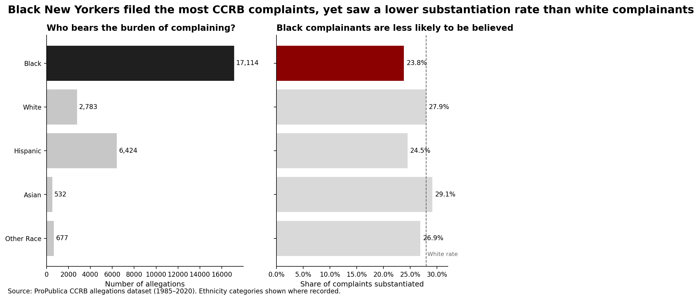
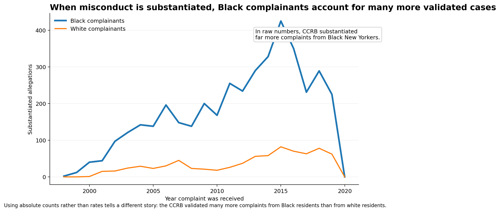

Proposition: The CCRB process disadvantages Black complainants relative to white complainants.
FOR the Proposition

Design Decisions and Rationale:
- (-0.5) I juxtaposed the total number of complaints with the substantiation rate for each group by displaying the statistics side by side. Showing these two measures together makes the issue feel broader than simply using a single statistic. The complaint counts highlight how frequently Black residents appear in the data, while the substantiation rates show differences in outcomes. Together, the two images encourage the reader to see a disparity, even though the data alone cannot establish a direct causal explanation.
- (-1.5) I highlighted the bars representing statistics for Black people in darker tones and used a muted gray for the other groups. This contrast directs attention exactly where I want it and makes the comparison feel more emphasized before the reader has carefully inspected the numbers. I considered giving every group equal visual weight, but that looked more neutral and a lot less impactful.
- (-1.0) I framed the title in more evaluative language using phrasing like “less likely to be believed.” The chart technically shows substantiation rate, not whether a complainant was literally believed, so this wording subtly twists an administrative outcome into a human judgment. The phrasing is meant to make the takeaway faster and more emotionally impactful, but it stretches beyond what the unbiased data directly indicates.
- (1.0) I kept the substantiation-rate axis starting at zero and labeled all values directly. This choice preserves the magnitude of the difference instead of exaggerating it through a truncated scale. I considered zooming into around the 20%–30% range to make the gap appear much larger, but that decision felt like it would have been more than just persuasive and leaning into some spirit of “falsifying data”.
- (0.5) I only included records where the complainant’s ethnicity was reported and mentioned this in the caption. A lot of entries in the dataset are missing this information, so I wanted to be clear about the subset being analyzed. I thought about showing the missing data separately, but doing so made the visualization feel more cluttered and weakened the main narrative.
AGAINST the Proposition

Design Decisions and Rationale:
- (-2.0) I switched from using rates to using raw counts of substantiated allegations. This is my main difference in comparison to my first visualization. Because Black complainants file more complaints overall, showing absolute counts makes it appear that the system substantiates more of their cases, even though the success rate per complaint is lower. By not showing the total number of allegations, viewers have a much different interpretation of the data.
- (-1.0) I limited the comparison to only Black and White complainants. Focusing on just these two groups simplifies the chart and makes the contrast easier to see at a glance, which strengthens the “against” argument. I considered including all ethnic groups, but the chart started to feel more cluttered and the main comparison became less clear.
- (-0.5) I used a line chart over time to highlight trends in substantiated complaints. The continuous lines make the pattern feel like there’s some historical consistency, which encourages viewers to interpret it as a consistent process rather than just a result of higher complaint volume. I also tried a bar chart of total substantiated cases, but it made the framing feel more selective while the continuous line made the argument seem more natural.
- (-1.0) I used specific phrasing in the title like “account for many more validated cases” because the word “validated” has a positive tone and frames substantiation as evidence that the system is working for Black complainants. The phrasing is technically accurate, but it was chosen to steer attention away from the viewer wondering if the higher number of substantiated cases could be due to other reasons.
Final Reflection
What surprised me most in this exercise was how little I had to change the underlying data to produce two very different interpretations. I did not modify the dataset itself, change the coding, or rely on an obviously misleading axis. Instead, most of the difference came from framing choices such as using leaving out certain pieces of data (using rates vs. direct counts, etc.), different phrasing in the titles, and different visual emphasis. In the “for” chart, I framed the CCRB process as a question of fairness given that a complaint has been filed, which makes rates the most relevant statistic. In the “against” chart, I focused on how many complaints ultimately lead to substantiated findings, so raw counts become the more natural measure to emphasize my point. Both perspectives are technically valid on their own, but each one encourages the reader to overlook the context that might weaken its argument.
Working on this assignment made me realize that ethical visualization is more than just about whether a graphic is “honest” or “dishonest.” It really depends on how much context the designer provides. A persuasive chart can still be pretty ethical if it highlights a real pattern while leaving room for readers to interpret the data themselves. On the other hand, a visualization feels like it becomes more misleading or dishonest when it hides important context, especially when missing denominators in rates, comparison groups, or uncertainty that could change the viewer’s conclusion. The challenge is that these boundaries are not strictly technical. They also depend on the audience, the sensitivity of the topic, and things like whether the goal is to inform people or quietly push them toward a particular interpretation.